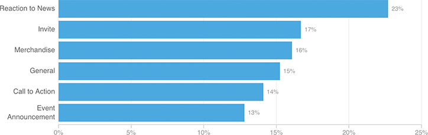

Which Of Clinton’s Supporter Emails Get Read?
Like any candidate, Hillary Clinton uses a variety of subject-line tactics to try to get her supporters’ attention: invites (“dinner?”), calls to action (“Go vote!”), reactions to news (“What did you think of last night’s debate?”), merchandise announcements (“Shop the new holiday collection”), event announcements (“Hear from Hillary in Orlando”), and general campaign messages (“You shouldn’t miss this.”). Here’s how often those different types of emails were opened in November, according to one outside analysis.
